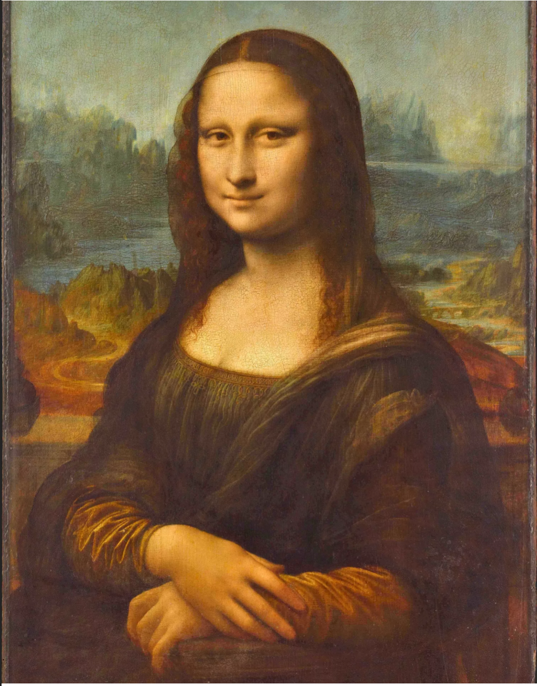
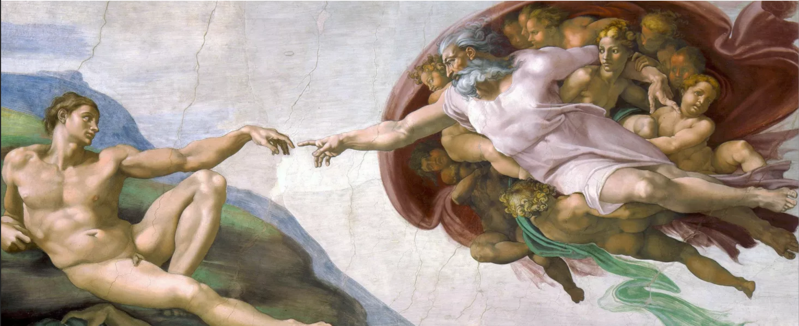
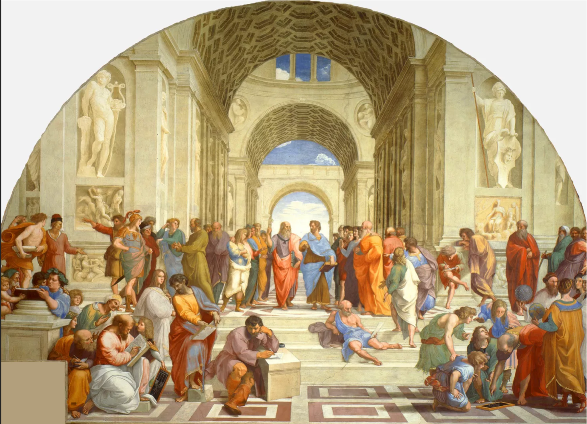
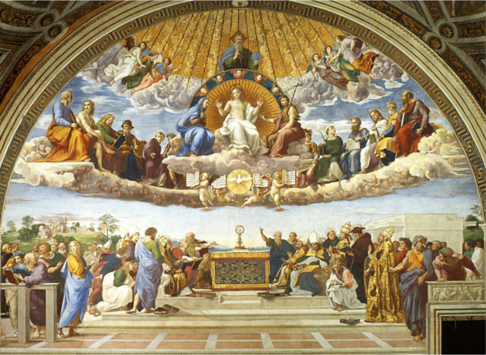
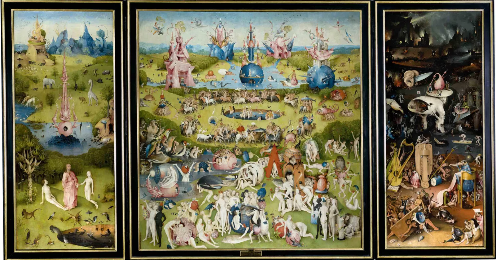
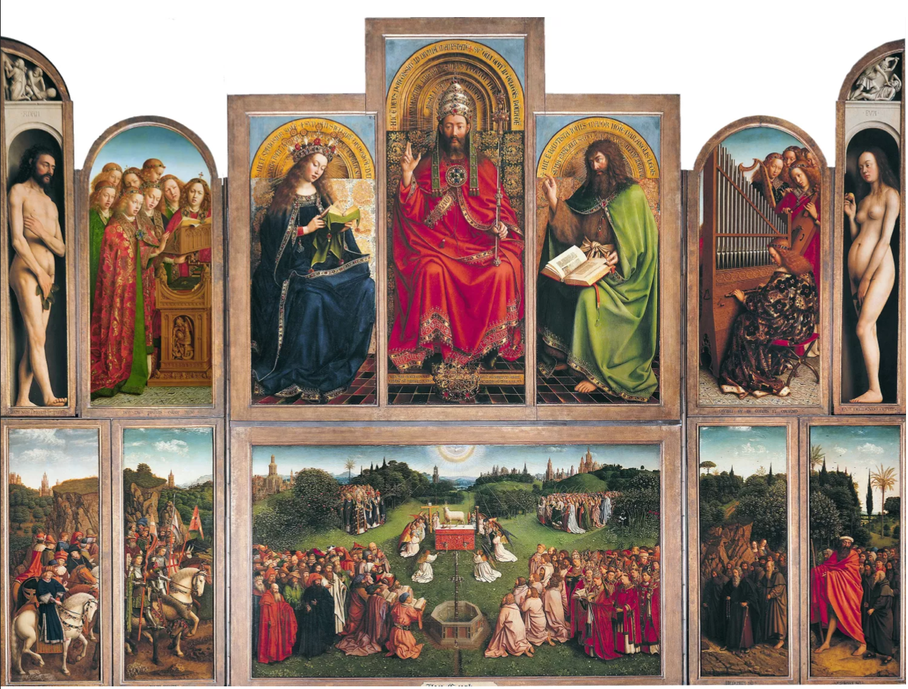

Venus es retratada como una figura perfecta y femenina, emergiendo de las olas con gracia y elegancia. Su cuerpo blanco como el marfil está realzado por los músculos pintados con precisión por el artista. Su cabello rojo tiene una fluidez que resalta la ligereza con la que extiende su influencia. Su expresión es extrañamente pasiva y ambigua, con una sonrisa que todavía está tomando forma y una mirada que parece derretirse en el espectador.

La Mona Lisa es conocida por ser el retrato de bodas de Lisa Gherardini, la esposa de Il Giocondo. Es innovador, ya que muestra a la figura en un perfil de tres cuartos y utiliza la técnica del sfumato para dar volumen y vitalidad a la figura. En lugar de usar líneas de contorno fuertes y definidas para separar las diferentes partes del rostro, da Vinci difumina las superficies sutílmente, lo que crea una sensación de espacio y separa a la figura del fondo.
La obra de Botticelli "La Primavera" Está repleta de simbolismo y mitología, con dioses, diosas y ninfas como protagonistas. La pintura transmite una sensación de armonía y personalidad, y es una alegoría colorida y vegetal que incluye más de doscientas especies botánicas presentes en la región de la Toscana. Sin embargo, es la figura femenina mitológica la que aporta la fuerza emocional a la obra, cautivando al espectador con su belleza y gracia, como así también las demás mujeres con cabello dorado y cuerpos curvilíneos, que transmiten una sensación de inocencia en su comportamiento y forma de ser.

Este fresco famoso de la capilla sixtina representa a Dios como un anciano con barba, rodeado de querubines, y extendiendo su brazo derecho para darle vida a Adán con un simple chispazo. A pesar de la simplicidad de los detalles, la representación es emotiva y conmovedora, capturando el misterio de la creación de la vida.
Este fresco famoso de la capilla sixtina representa a Dios como un anciano con barba, rodeado de querubines, y extendiendo su brazo derecho para darle vida a Adán con un simple chispazo. A pesar de la simplicidad de los detalles, la representación es emotiva y conmovedora, capturando el misterio de la creación de la vida.
El fresco representa la Verdad teológica, opuesta a el fresco de la Escuela de Atenas. La Verdad teológica se personifica en la eucaristía. Este acto es el centro de la Iglesia de Cristo y es utilizado como medio de redención y relación con un Ser Divino que incluye a los santos y potencias celestiales. Rafael pretende representar esta compleja realidad teológica en el fresco que se destina a la oficina y biblioteca del papa Julio II como un medio de contemplación del misterio de la Iglesia en la tierra y en los cielos.
El tríptico nos muestra una secuencia de la creación, empezando por la llegada de Eva al mundo con la observación de Adán y la presencia divina. Animales fantásticos acompañan la escena. En la pieza central, se representa la vida antes del Diluvio Universal, con arquitecturas atemporales y crecientes cauces de ríos. En la tabla derecha, se muestra el infierno como consecuencia de una conducta inadecuada.
Es considerada una de las obras más robadas en la historia del arte, pasando por las manos de Napoleón, el rey de Prusia y Hitler. En esta obra se pueden apreciar dos grupos de ángeles que se encuentran en un escenario celestial, algunos de ellos cantando y otros tocando instrumentos. Este concierto es mencionado en el libro bíblico del Apocalipsis como un evento que se llevará a cabo en el cielo. La obra muestra a los ángeles en actitud de adoración y celebración.
Para encontrar más análisis sobre el arte renacentista, ingresar a: